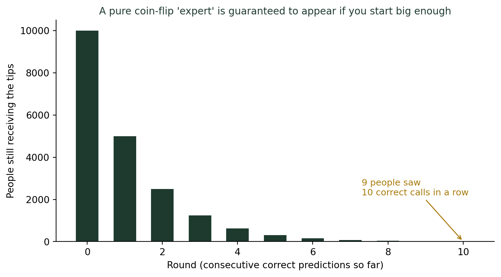
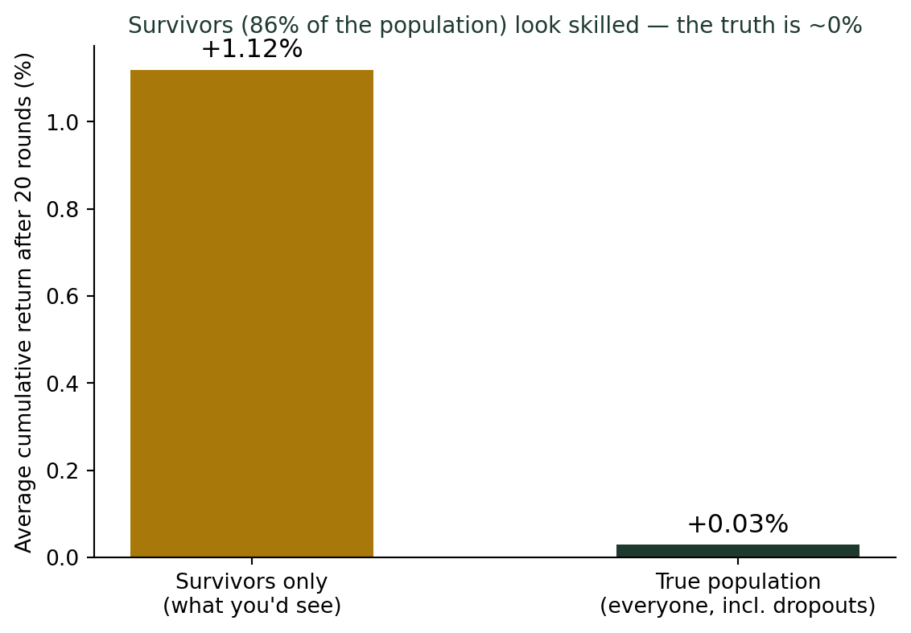

(사람의 직관은 왜 통계와 충돌하는가) 성공한 사람만 보면 성공법이 보이지 않는다
통계기초
확률
행동통계
’10전 10승 적중 리딩방’을 만드는 방법은 사실 간단하다. 만 명에게 서로 다른 예측을 나눠 보내고, 틀린 사람은 버리고 맞춘 사람에게만 계속 보내면 된다. 생존자만 보고 성공의 비결을 찾으려 하면, 정작 성공을 만든 것이 무엇인지는 절대 보이지 않는다.
10전 10승 전문가를 만드는 아주 쉬운 방법
한국에서 몇 년째 반복되는 투자 사기 수법이 있다. 소위 “족집게 리딩방”이다. 방식은 이렇다. 운영자가 만 명에게 문자를 보낸다. 절반에게는 “내일 코스피 상승”, 나머지 절반에게는 “내일 코스피 하락”을 예측했다고 보낸다. 다음 날, 예측이 맞은 5천 명에게만 다시 연락한다. 그 5천 명을 다시 절반으로 나눠 상승·하락을 보내고, 또 맞춘 2,500명에게만 연락한다. 이 과정을 열 번만 반복하면, 시작할 때 만 명이었던 사람 중 10번 연속으로 정확히 맞힌 사람이 통계적으로 반드시 남는다. 그 사람들 눈에는 “10전 10승”의 전문가가 실제로 존재하는 것처럼 보인다. 실제로는 동전을 던진 것과 다를 바 없는데도.
시작 인원이 만 명이었기 때문에, 10라운드를 거쳐도 약 9~10명은 반드시 남는다. 운영자는 이제 이 소수에게 “그동안 무료였지만, 이제부터는 유료 회원만 받겠다”고 접근한다. 이 사기가 성립하는 이유는 간단하다. 틀린 사람들은 조용히 사라지고, 맞춘 사람들만 계속 눈에 보이기 때문이다. 사라진 사람들의 존재를 모르면, 남아있는 사람들의 “적중률 100%”가 실력처럼 보인다.
2차 대전의 폭격기와 통계학자 왈드
이 원리에 이름을 붙인 것은 제2차 세계대전 때의 한 통계학자다. 미군은 유럽 상공에서 돌아온 폭격기의 총알 구멍을 분석해, 구멍이 가장 많이 몰린 날개와 꼬리 부분에 장갑판을 덧대려 했다. 통계학자 에이브러햄 왈드(Abraham Wald)는 정반대를 주장했다. “그 부분에 장갑을 대면 안 됩니다. 왜냐하면 그 부분에 총을 맞고도 살아 돌아왔다는 뜻이니까요.” 정작 장갑이 필요한 곳은 총에 맞으면 격추당해 돌아오지 못한 비행기들의 엔진과 조종석이었다. 분석 대상이 된 표본(귀환한 비행기) 자체가 이미 “살아남은 것만 걸러진” 표본이었던 것이다. 이 통찰 이후 이 오류에는 생존자 편향(survivorship bias)이라는 이름이 붙었다.
“성공한 사람들의 습관” 책이 위험한 이유
서점 경제경영 코너에는 “이렇게 해서 성공했다”는 책이 끊이지 않는다. 유튜브에는 “성공한 창업가의 하루 루틴” 영상이 넘친다. 문제는 이런 콘텐츠가 다루는 표본이 전부 생존자라는 점이다. 새벽 4시에 일어나고, 공격적으로 사업을 확장하고, 남들이 말리는 데도 밀어붙인 창업가 100명 중 1명이 성공했다면, 우리는 그 1명의 습관만 책으로 읽는다. 똑같이 새벽 4시에 일어나고 똑같이 공격적으로 밀어붙였지만 망한 99명은 책을 쓰지 않는다. 그 99명을 보지 못하면, “새벽 기상”과 “공격적 확장”이 성공의 원인처럼 보인다. 실제로는 성공과 무관하거나, 오히려 위험 요인이었을 수도 있는데 말이다.
살아남은 사람들의 평균은 원래보다 부풀려 보인다
리딩방 사례를 조금 더 확장해보자. 이번엔 순전히 운으로만 수익률이 결정되는(실력은 전혀 없는) 가상의 투자자 5만 명을 만들어, 20번의 투자 라운드를 거치게 한다. 매 라운드 수익률은 평균 0%를 중심으로 무작위로 오르내린다. 다만 누적 손실이 일정 수준을 넘으면 “파산”으로 간주해 시장에서 퇴출시킨다.

전체 5만 명의 진짜 평균 수익률은 0%에 가깝다 — 애초에 실력을 전혀 넣지 않고 설계했으니 당연하다. 그런데 파산해서 사라진 사람들을 빼고 살아남은 사람들만 놓고 평균을 내면, 뚜렷하게 플러스로 보인다. 만약 이 살아남은 투자자들만 인터뷰해서 “성공 비결”을 취재한다면, 실제로는 존재하지 않는 “전략”을 마치 진짜 원인인 것처럼 기사로 쓰게 된다.
성공 사례를 볼 때 확인할 것
- 실패한 사람들은 어디 있는가? 보이지 않는다면, 지금 보고 있는 것은 전체 그림이 아니라 살아남은 일부다.
- 성공한 사람과 실패한 사람이 정말 다른 행동을 했는가? 아니면 둘 다 같은 행동을 했는데 결과만 갈렸는가? 후자라면 그 “행동”은 원인이 아니다.
- 시작할 때 표본이 얼마나 컸는가? 표본이 충분히 크면, 순전한 운만으로도 몇 명은 반드시 극적인 성공을 거둔다. 그 몇 명의 존재 자체는 “비결이 있다”는 증거가 되지 못한다.
더 깊이: 보이지 않는 사람들이 추정값을 왜곡한다
강의노트 〈조사방법론 — 무응답 개요〉는 표본으로 뽑힌 사람 중 일부가 응답하지 않으면, 응답자만으로 계산한 추정값이 모집단 전체의 실제 값과 체계적으로 달라질 수 있다고 설명한다. 생존자 편향은 이 원리의 또 다른 얼굴이다. 무응답 편향에서는 “답하지 않은 사람”이 보이지 않고, 생존자 편향에서는 “실패하거나 사라진 사람”이 보이지 않는다는 차이가 있을 뿐, 관찰되지 않은 대상이 관찰된 대상과 체계적으로 다른 특성을 가질 때 추정값이 왜곡된다는 핵심 메커니즘은 완전히 같다. 결국 두 편향 모두 같은 질문으로 요약된다. “지금 내가 보고 있는 표본에서, 원래 있어야 했는데 빠진 사람은 누구인가?”
결론: 보이는 것이 전부라고 믿는 순간 속는다
에이브러햄 왈드가 대단했던 이유는 남들과 다른 데이터를 본 게 아니다. 같은 데이터를 보면서 “이 데이터에 없는 것은 무엇인가”를 물었을 뿐이다. 리딩방의 “10전 10승” 전문가도, 서점의 성공 신화도, 살아남은 투자자의 인터뷰도 전부 같은 함정에 빠지기 쉽다. 눈앞의 생존자들은 실제로 존재하고, 그들의 숫자도 거짓이 아니다. 문제는 그 숫자만으로 성공의 원인을 찾으려 할 때 생긴다. 성공의 진짜 이유는, 대개 성공한 사람들 옆이 아니라 더 이상 이야기를 들려줄 수 없는 사람들 쪽에 있다.